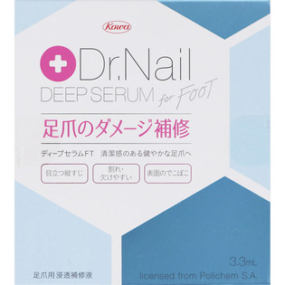
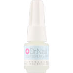

返回列表
产品名称：ディープセラム FT

興和新薬 ディープセラム FT ３．３ｍｌ
メーカー 興和新薬
JANコード 4987067452002
商品の特徴
足爪のダメージ補修
清潔感のある健やかな足爪へ
目立つ縦すじ 割れ・欠けやすい 表面のでこぼこ
成分・分量
【成分】
エタノール、水、ジメチルスルホン、プロピレングリコール、ヒドロキシプロピルキトサン、フェノキシエタノール、スギナエキス、エトキシジグリコール、エチルヘキシルグリセリン、ピロクトンオラミン
用法及び用量
【使用方法】
入浴後など清潔で乾いた足爪に薄く塗布してください。
※水溶性のため、長時間水にふれない時（入浴後や就寝前など）のご使用が効果的です。